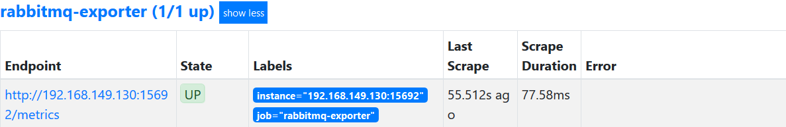
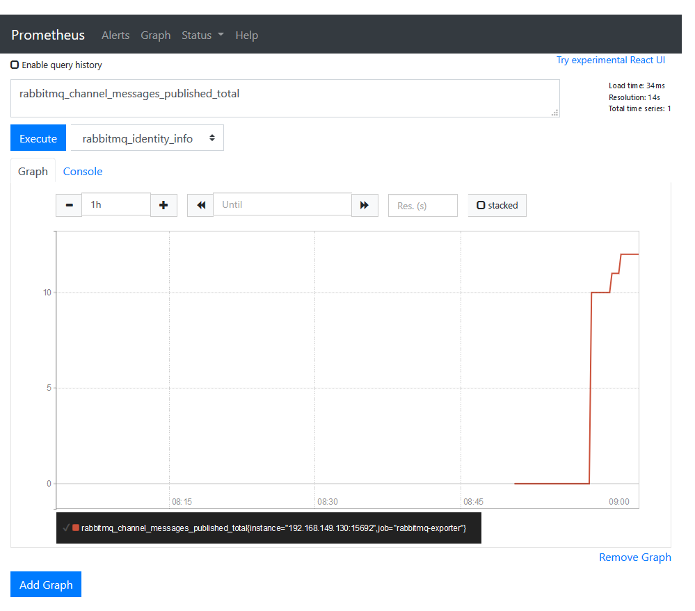

想特地找個一個有自帶plugin的軟體練習一下幫助記憶，剛剛好是常常使用RabbitMQ！這次就來測試看看，當作實務運用的練習
rabbitmq-prometheus的repository
一樣求方便使用docker-compose，寫個陽春的Dockerfile會比較方便
為了使用內建的pulgin，直接用3.8.0以後的image，並且RUN啟用的command
FROM rabbitmq:3.8.6-management
RUN rabbitmq-plugins enable rabbitmq_prometheus
compose file增加port 15692
|
|
接下來就能在host上用cURL測試了
$ curl -v -H "Accept:text/plain" "http://localhost:15692/metrics"
...
# TYPE rabbitmq_consumers gauge
# HELP rabbitmq_consumers Consumers currently connected
rabbitmq_consumers 0
# TYPE rabbitmq_queues gauge
# HELP rabbitmq_queues Queues available
rabbitmq_queues 0
# TYPE rabbitmq_build_info untyped
# HELP rabbitmq_build_info RabbitMQ & Erlang/OTP version info
rabbitmq_build_info{rabbitmq_version="3.8.6",prometheus_plugin_version="3.8.6",prometheus_client_version="4.6.0",erlang_version="23.0.3"} 1
# TYPE rabbitmq_identity_info untyped
# HELP rabbitmq_identity_info RabbitMQ node & cluster identity info
rabbitmq_identity_info{rabbitmq_node="rabbit@7f33446fce98",rabbitmq_cluster="rabbit@7f33446fce98"} 1
# TYPE telemetry_scrape_duration_seconds summary
# HELP telemetry_scrape_duration_seconds Scrape duration
# TYPE telemetry_scrape_size_bytes summary
# HELP telemetry_scrape_size_bytes Scrape size, not encoded
# TYPE telemetry_scrape_encoded_size_bytes summary
...
巴拉巴拉一大堆
適當增加一下prometheus的config，反正只是測試一下，就姑且用static config吧
scrape_configs:
...
- job_name: 'rabbitmq-exporter'
scrape_interval: 60s
scrape_timeout: 59s
static_configs:
- targets:
- 'rabbitmq-exporter:15692'
能看到endpoint增加了


這樣就能用Prometheus監控RabbitMQ了
剩下細部的設定可以參考https://www.rabbitmq.com/prometheus.html